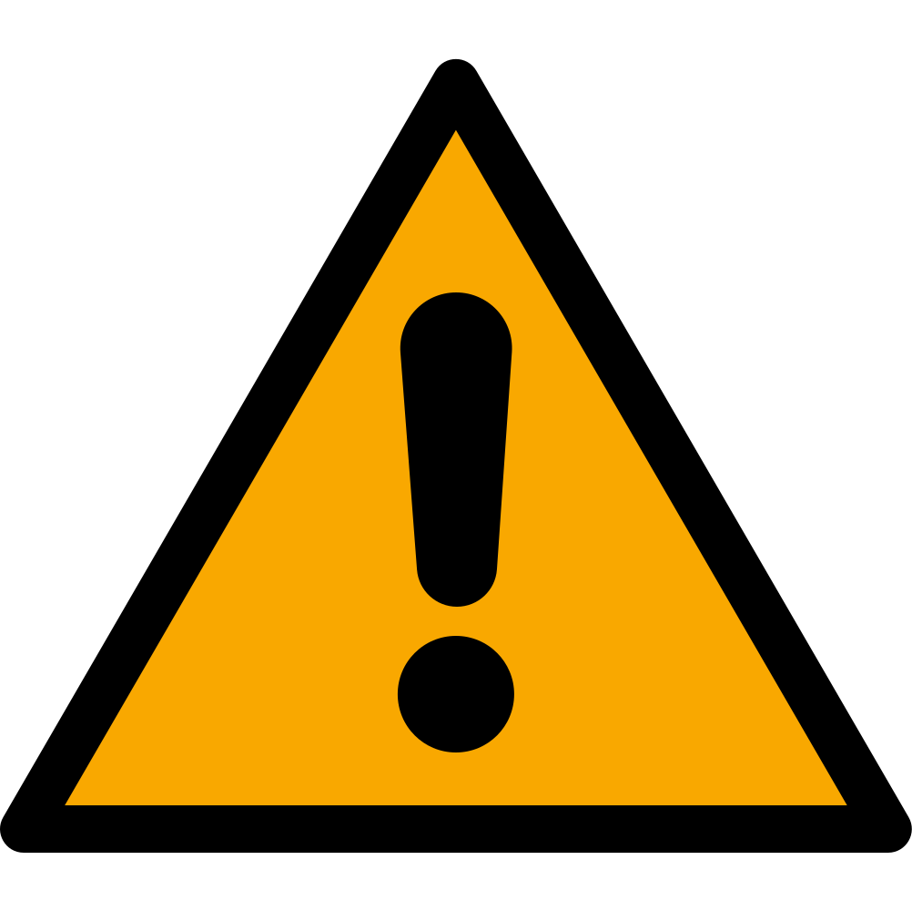

General warning
History
The 1949 Geneva Protocol on Road Signs and Signals included an "Other Danger" sign, shown as a red triangle with a single vertical bar. The 1968 Vienna Convention on Road Signs and Signals keeps a warning for other dangers, shown today with an exclamation mark.
Adoption
The exclamation mark flags dangers that have no symbol of their own, on roads and in workplaces. The ISO 7010 safety standard sets it in a yellow triangle, often with a few words of explanation.
Sources
